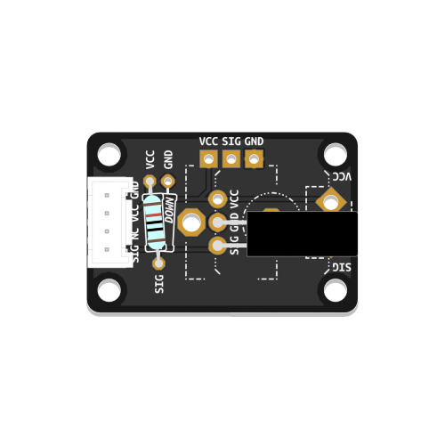

Detects if it has been tilted beyond a certain point.
Learn how to make your own tilt switch here.
# --- Imports
import digitalio
import time
import board
# --- Variables
tilt_switch = digitalio.DigitalInOut(board.D13)
tilt_switch.direction = digitalio.Direction.INPUT
# --- Functions
# --- Setup
# --- Main loop
while True:
if tilt_switch.value is False:
print("False")
else:
print("True")
time.sleep(0.05) # Make the loop run a little bit slower